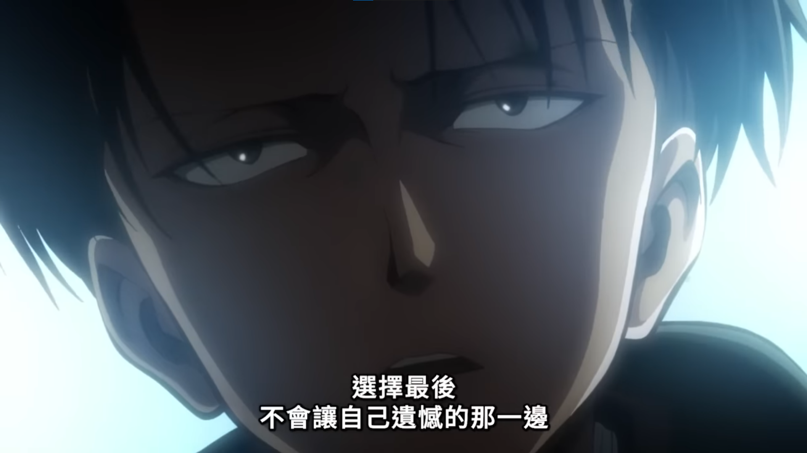

Studying.
Coding.
Living.
K E L V I N
離開學還有 天~
Kelvin's homepage~

「就算相信自己的實力、相信值得信賴的同伴的選擇，但還是沒有人知道結果會怎樣…
所以你就自己努力選擇一個不會留下遺憾的做法吧。」
里維．阿卡曼 -《進擊的巨人》
我(們)的作品
Portfolio - 我的學習歷程專區
111學年度英語話劇暨歌舞比賽~高一忠
國文影片 - 校園秘密景點🎬
國小英語學藝競賽(不只喔)
徐志摩的世界
常用網站整理
喜歡的東西
Aimer
「進撃の巨人」The Final Season
君の膵臓をたべたい
Formula 1
MotoGP
喜歡的歌曲
Taylor Swift - All Too Well (10 Minute Version) (Taylor's Version) (From The Vault)
Milet - Grab the Air
Linkin Park - In the End
Shawn Mendes - Life of the Party
Charlie Puth - We Don't Talk Anymore (feat. Selena Gomez)
九九、陳忻玥 - Fall in Love
Younha - Even Horizon